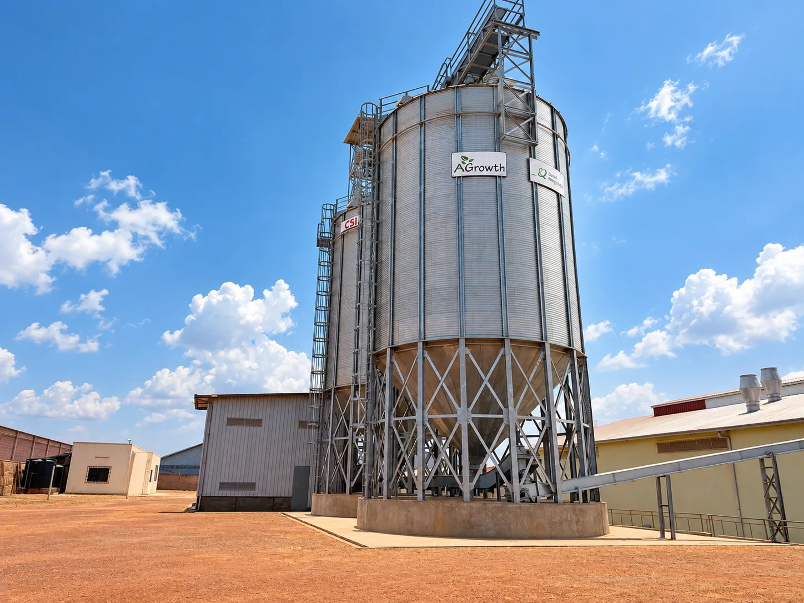
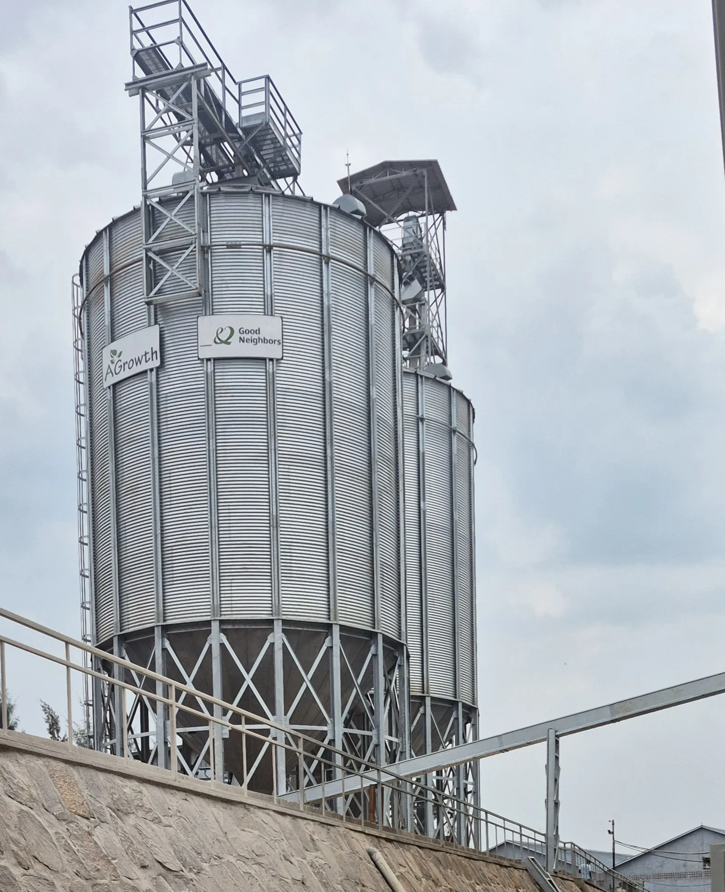
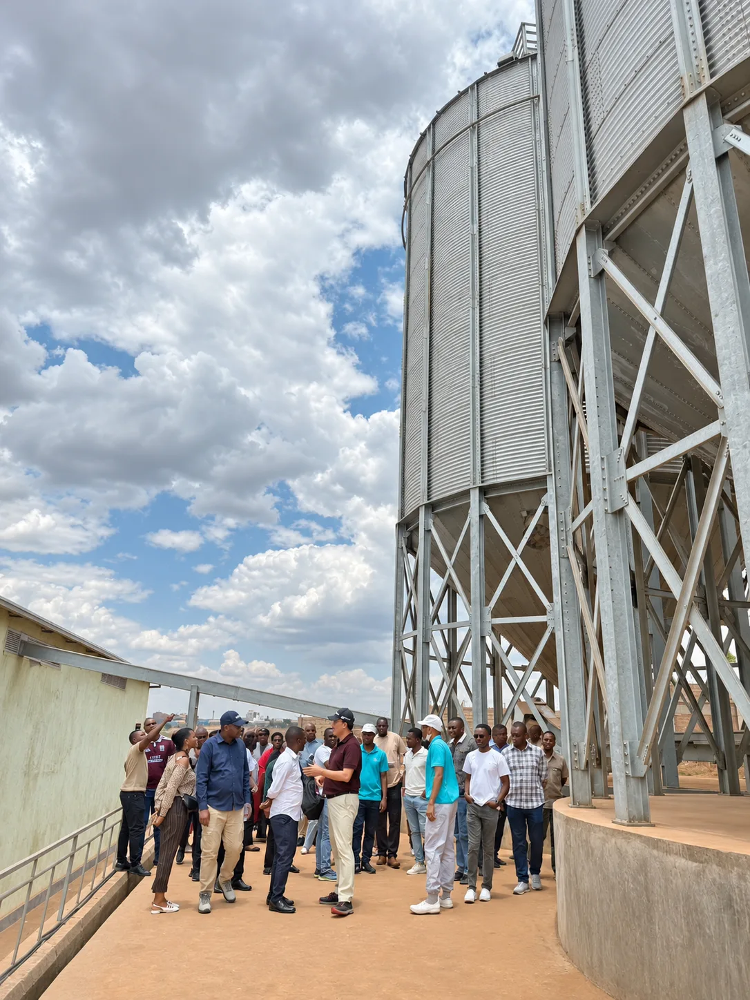
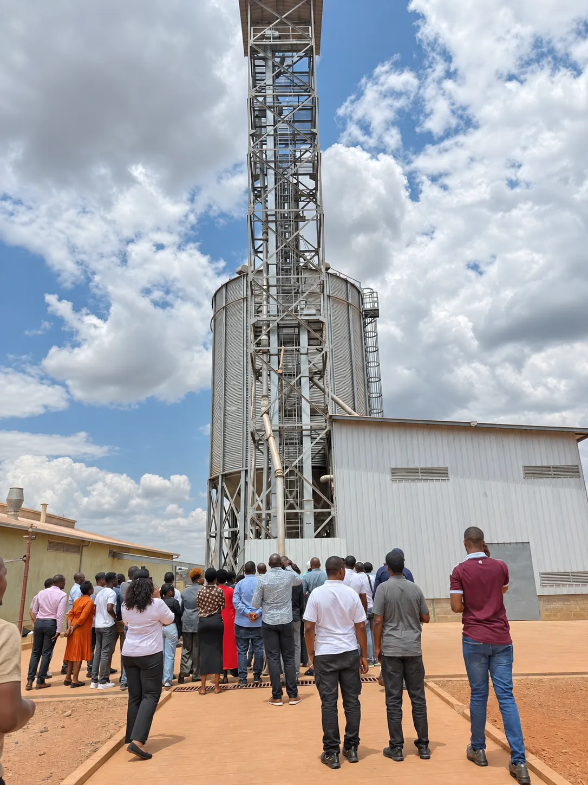

AGrowth · Oct 7, 2026 · 2 min read
AGrowth · Oct 7, 2026 · 2 min readFrom the Ground Up: AGrowth’s New Grain Silos
Two silos. 600 tonnes each. A stronger foundation for maize storage and NURIRA flour production.

In the second half of 2025, AGrowth installed two 600-tonne grain silos at its Kigali facility, creating 1,200 tonnes of combined storage capacity. The investment strengthens the infrastructure supporting NURIRA maize flour production and helps the team organize maize before milling.
Building the Structure
The installation brought together steel supports, equipment, foundations and on-site work. The structure was assembled in stages, with each element forming part of the storage system now operating beside the mill.

Taking Shape, Section by Section
As assembly progressed, the scale of the project became visible. The two silo bodies provide storage space for maize ahead of production, improving the facility’s ability to manage raw materials and production planning.

Bringing the Installation Together
The project extended beyond the silo bodies themselves. Supporting towers, conveyors and surrounding steelwork were brought together to create a connected grain-handling system.

Why This Investment Matters
Maize flour production begins before grain reaches the mill. Storage, raw-material availability and production planning all affect the consistency of supply. The new silos give AGrowth a stronger basis for managing these steps and supporting reliable NURIRA flour production.
A Milestone for AGrowth
The silo installation marks an important development at AGrowth’s Kigali facility. It strengthens the first stage of the production process and reflects the company’s continued investment in local maize, milling infrastructure and reliable supply for wholesale and institutional partners.
Product or wholesale enquiries:
agrowth.adm@gmail.com
+250 791 348 801